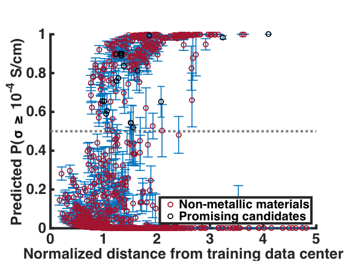

By unleashing machine learning algorithms on the last several decades' worth of data, we have predicted the performance of every known lithium-containing inorganic crystalline solid as a solid-state electrolyte in a lithium ion battery.
Batteries will play an increasingly important role in society as our electronics become increasingly portable and as our transportation systems move away from fossil fuel-based energy sources. Although significant advances have been made in batteries over the last several decades, many issues remain, including concerns over cycle life and safety. By replacing the flammable liquid electrolyte of conventional batteries with a stable solid, we can drive significant improvements in battery safety, lifetime, and energy density. But solid batteries are complicated systems - and finding new electrolyte materials that can stand up to the many different demands of battery performance is no easy task. Candidate materials must exhibit high lithium conductivity, robust chemical and phase stability, a wide electrochemical stability window, low electronic conductivity, and low cost.
The past several decades have seen many studies of candidate materials for solid-state electrolyte applications - but these studies typically focus only on ionic conductivity and candidates are chosen for study on a guess-and-check basis. For the first time, we have aggregated the available data from past studies and analyzed it though the lens of machine learning to drive new design insights. This allows us to strategically select for the most promising materials rather than continue in trial-and-error.

For every stable, nonmetallic lithium-containing material, we predict the likelihood of exhibiting fast lithium conduction versus the level of model extrapolation required to make the prediction. We seek materials in the upper left-hand corner of the plot.
Ionic conductivity is generally thought to be the most restrictive constraint on candidate materials, and is also the most time consuming to evaluate computationally or experimentally. We compile data on 40 materials with both good and bad measured room temperature lithium conductivity values. We then “show” these examples to a logistic regression classifier, which “learns” to predict whether that material performed well or not based on the atomistic structure. Once this training is complete, we unleash the trained model on the more than 12,000 lithium-containing solids, and find that around 1,000 of them have a >50% chance of exhibiting fast lithium conduction. To shrink the space of candidate materials further, we also predict the performance on a host of other metrics, including stability, electronic conduction, cost, and earth abundance. With all metrics considered, we are able to screen 12,000 candidates down to the 21 most promising structures in a matter of minutes. This work represents the first attempt to screen all known lithium-containing solids for electrolyte candidates with a holistic screening criteria, and because of the machine learning approaches employed we do it approximately one million times faster than evaluating each material one-by-one.
In addition to identifying the most promising new materials, we also gain new insight on which performance requirements are the most restrictive across the full pool of candidates. We find, counterintuitively, that fast ionic conductivity is actually not the most restrictive constraint; in fact, it is more restrictive to screen only on stability and cost alone. This underscores the importance of the holistic approach in accelerating the search for the best new materials.
Publication:
Sendek, A. D., Yang, Q., Cubuk, E. D., Duerloo, K.-A. N., Cui, Y., Reed, E. J., Holistic Computational Structure Screening of more than 12,000 Candidates for Solid Lithium-ion Conductor Materials. Energy & Environmental Science, doi:10.1039/C6EE02697D (2016).
News coverage:
Using machine learning to build a better battery. MathWorks Behind the Headlines Blog, January 8, 2017. Join the Facebook discussion here and here!
Stanford Researchers Work On Solving Lithium-Ion Battery Explosions. CBS SFBayArea, December 19, 2016
No more burning batteries? Scientists turn to AI to create safer lithium-ion batteries. Stanford Precourt Institute for Energy News, December 15, 2016